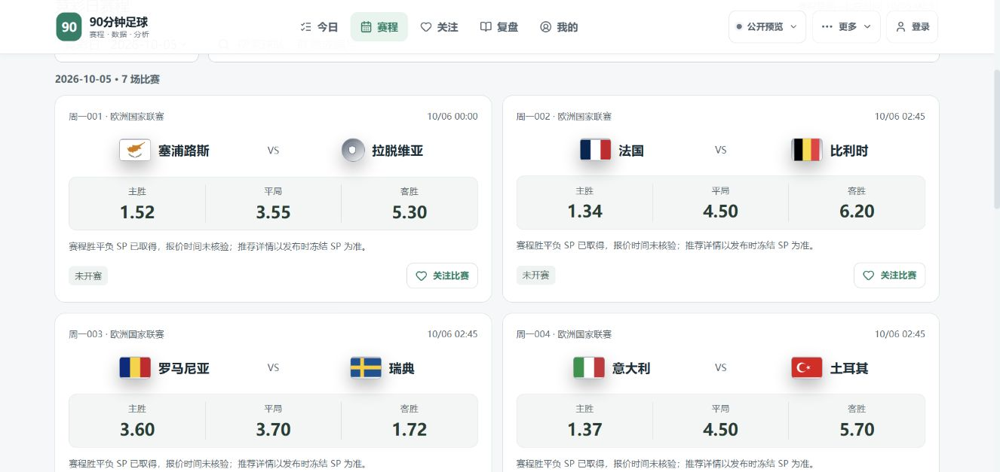

线上真实数据 · 北京时间 2026/10/5 01:25:38
足球系统交付测试
可以进行真实赛事交付测试。10 月 5 日销售日有 7 场，最早按北京时间 10 月 6 日 00:00 开赛。正式推荐资格仍为 0；完整上线状态以精确发布回执为准。
| 真实赛程 | 31 场；10/05 销售日 7 场 |
|---|
| 官方赔率 | 7/7 场 HAD + HHAD 齐全 |
|---|
| 原始冻结证据 | 7/7 绑定；14/14 双市场签名通过 |
|---|
| 认证 HTTP 列表 / 详情 | 31 / 31，差异 0 |
|---|
| Chrome 展示 | 候选桌面、390px 与完整临时登录分析已测；临时权限已撤销 |
|---|
| 正式推荐资格 | 0/7；当前仅参考 |
|---|
| 完整版本上线 | 已取得精确发布验收 |
|---|
| 本机关机独立采集 | 未通过；官方采集仍依赖本机 |
|---|
上表赛程、资料缺口、正式推荐资格为北京时间 2026-10-04 22:29:13 的原始线上批次。最新运行时与接口另见发布回执。认证接口一致性不代表预测命中率。
已经做出的优化
比赛列表默认显示当前或最近的未来销售日，修复默认跳到 10 月 8 日的问题。保留明确 URL 日期和搜索；18 项页面回归通过。
发布收据的源码哈希重新审计，保留来源、签名、冻结记录、发布窗口与完整验收门槛。候选 HEAD：a179c672d134f34ec836a8ba5a560578fab24c99
认证 HTTP 已在 r790 重新核验，列表与全部详情的一致性核验通过；这是接口一致性测试，不是预测命中率。
线上截图

仍需处理
- 2026-10-04 22:29 线上批次中，七场均缺可用首发、伤停、xG，六场缺天气；不得把缺失当作健康或零。
- “资料逾期”标签使用了未来截止时钟，该状态还参与资料质量权重。本轮仅定位，尚未修复，也未因该问题改动推荐计算代码；下一版拆开当前观测与截止资格并检验权重变化。
- 22:46 认证列表曾一次 503，22:48 完整 31 场测试通过；瞬时异常已留证，原因未确证。
- dot 08:00 / 16:00 已实际巡检；官方直采迁移和七天验收尚未通过。本机关机会中断现有官方采集。
- 未证明命中率提升。已看过的历史 154 场诊断中，模型方向准确率 50.65%、市场 53.90%，均非正式推荐命中率，也不能用作未来验证集。按截止前冻结版本进行后续赛事复盘。
r790 完整运行时已经通过正常发布程序；慢资料阶段存在降级。前端单独发布基线初始化失败，后续仅发布 UI 的流程需另行修复与验收。这两项限制没有被隐藏。
发布状态